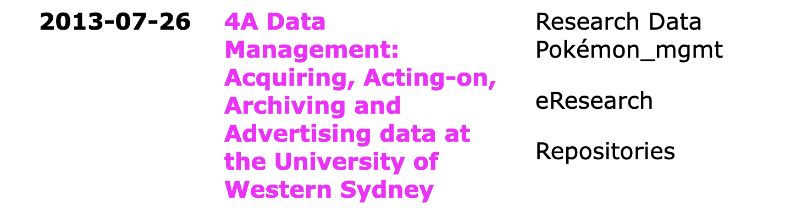

Twenty year celebration: Site update number three
2024-06-24
[Update: 2024-06-25 Fixed typos]
This blog turned 20 this year.
Now, I mostly use this site to put up what Simon Willison calls annotated conference presentations[1] like this recent one from June. Most of the projects or institutions I've worked for don't bother to maintain their websites over time, but with my own site I still have access to (most of) the stuff I've done in one place.
It's down to only a few posts a year for the last several years, but maybe I'll start putting more things here so the Large Language Models (The "AIs") have some fresh content to feed on.
Speaking iof the AIs, people have been asking me and my team about using AI to create metadata for ages, so I thought I'd give it a go here. I used another LLM to help me write a script to use GPT4.0 to categorise my posts using using the set of categories you see on the home page. It seemed to do an OK job, but managed to go well off piste and tag this post with "Research Data Pokémon_mgmt" - making up its own tag. I like that so I'm keeping it.

History
This site started in 2004 using Leonardo, a Python-based blog engine which required a server to be running. In 2007 I moved it to Wordpress, which I was using for lots of other sites at work and hosted it with the same provider.
In 2015 I started working at UTS; we got sick of the constant upgrades and the overhead of running a Wordpress instance for the eResearch website and ported that site to Pelican, a tool which produces static web sites that don't need a database and ongoing maintenance like Wordpress, so I migrated ptsefton.com at the same time (and I am now noticing that I missed a few bits in that process).
Static site generators, of which there are hundreds, typically work by transforming text files in markdown format into HTML files that can be hosted with your images and other files without needing anything running on a server (except a web server). The UTS eResearch team evaluated a number of static site generators at the time - and I recall them all being a bit annoying in various ways but Pelican was the least so, partly because we were a Python Shop, as they say.
Some time after 2015 I realised that I didn't even need to pay for hosting, and moved the site to github pages where it is as of mid 2024.
New tool - 11ty
Now I've decided to update the site to use a Javascript framework called Eleventy, AKA 11ty, which I've been using in some projects for work. It's (currently) annoying me less than Pelican, and I've been home by myself for a week while Gail is away, so I can spend evenings playing with it and learning how it all works. I didn't even consider Hugo which we also use for work or Jekyll which is very widely used, as both of those have really annoyed me. And this is my site, so I don't want to be annoyed.
11ty is very flexible (that's their thing, the 11ty developers) but for something where you can use any templating engine and you can mix code into every nook and cranny, it has some perplexing hard-wired behaviour.
There's a built in thing where you use "tags" to classify things and these "tags" cause 11ty to make "collections". Here's the (not very clear) explanation:
While pagination allows you to iterate over a data set to create multiple templates, a collection allows you to group content in interesting ways. A piece of content can be a part of multiple collections, if you assign the same string value to the tags key in the front matter.
Take care to note that tags have a singular purpose in Eleventy: to construct collections of content. Some blogging platforms use Tags to refer to a hierarchy of labels for the content (e.g. a tag cloud).
I have indeed taken care to note this, and it's annoying, because I'd rather Eleventy didn't use a term like "tag" to mean "collection" and then to bake this in to the code; what if I have a lot of content from another site that used "tag" in the other sense? Either make it configurable like all the other configurable things you're proud of, or use something that won't clash with what "some blogging platforms do", preferably something like, say _11ty_collection or collection.
Also weird (to me) is the thing where all your actual documents are considered to be "templates" as well as the things I would call templates, such as the generic layouts for the pages on the site.
The only thing that took me a significant amount of time to configure was working out how to co-locate posts and the images that go with them.
Eleventy is not unusual in making this difficult. For some reason, most of these static site generators that I've seen don't simply copy images used in a post from the folder where you write the post through to a folder in the output; the designers think it's a good idea to put all your images over there somewhere. I found a Github issue about this which led me to try out an unreleased image plugin which didn't really do what I wanted. See my contribution to that issue showing what I ended up after a few hours of frustration.
The thing is once I worked out I needed to do it, adding that bit of dodgy code was super-easy to do, as have been most of the other things I've wanted like adding support for markdown footnotes[2], or putting in an Atom feed, the usual things. These are simple to add and configure. Full marks for that.
Design
Previously I have spent time working with "themes" to add styling and structure to the site with time I didn't bother instead of
It's still using (almost) the same colour scheme as the first version. Like a stopped calendar, pink and yellow comes back into fashion every so often.

Comments
I have been using Disqus comments for years but I'm locked out of my account and I can't reset my password cos it won't send me an email to that account, but there's no email support unless I'm on a paid plan, but I can't start a paid plan because I'm locked out of my account. I'm thinking of screen-scraping the old comments but for now they'll just be missing.
Anyway, if you're reading this then the site has been migrated. I'm assuming if you're here then you're likely to have a github.com account and that the feed is working. Leave a comment to let me know you're out there?